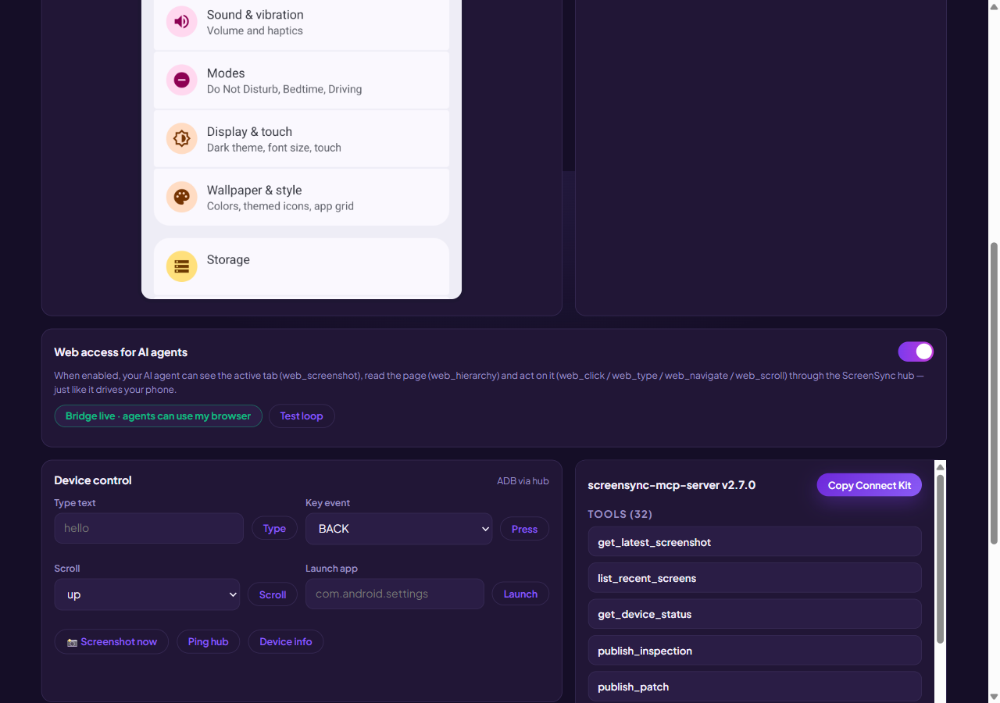
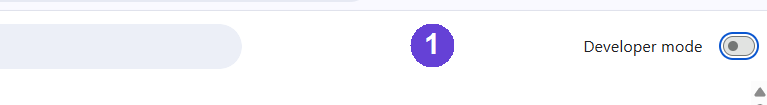
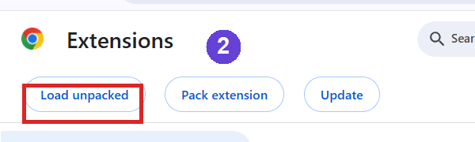
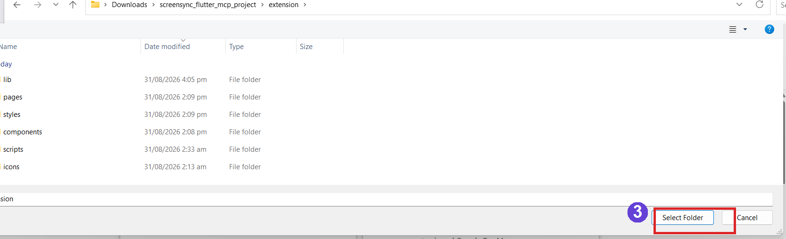
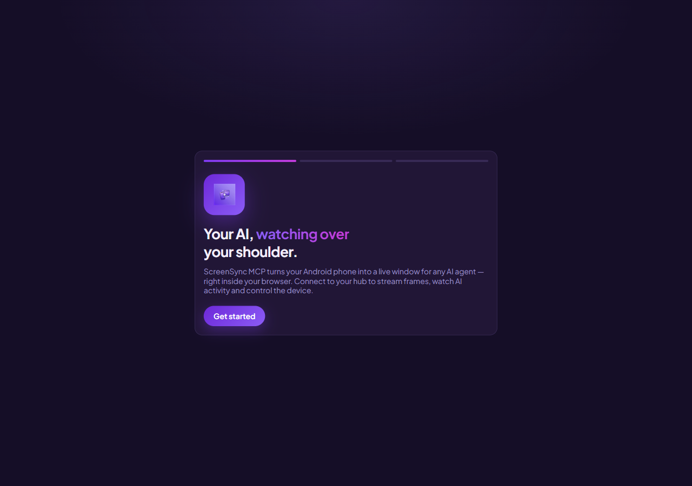
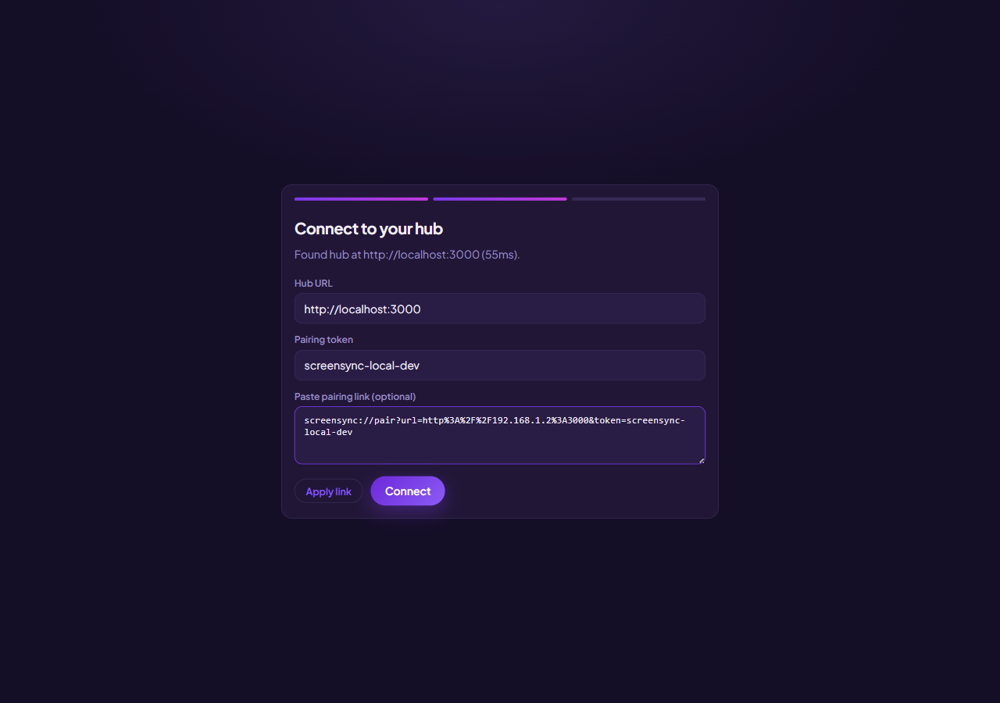
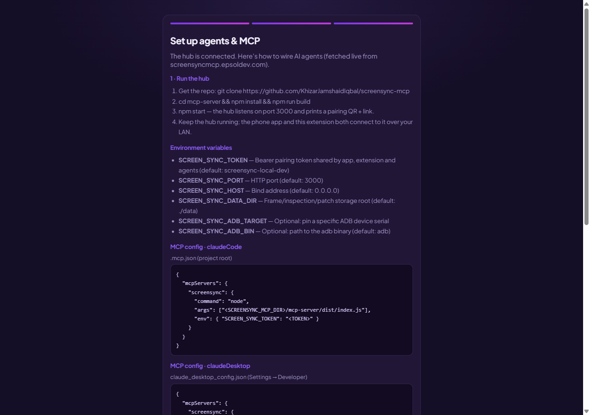
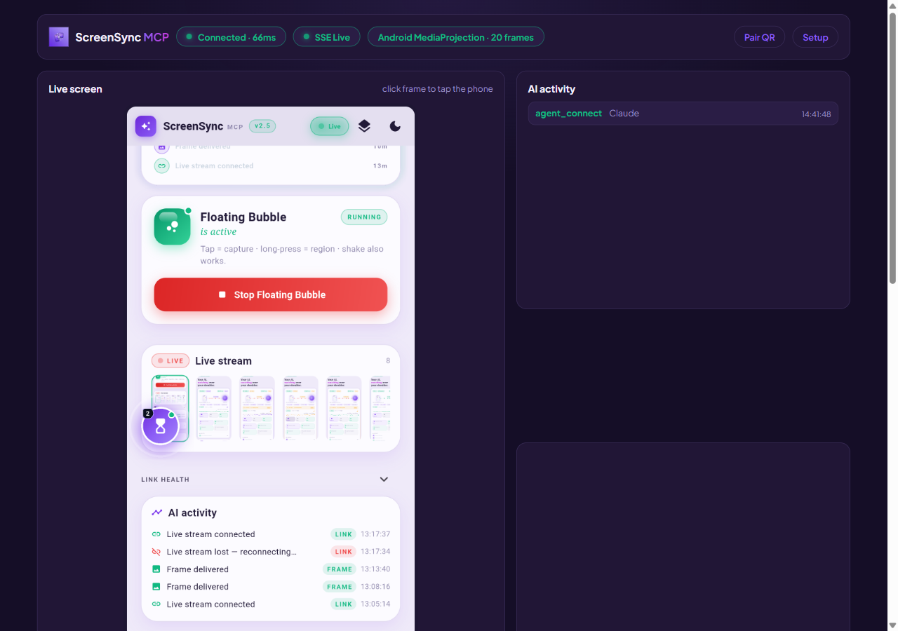
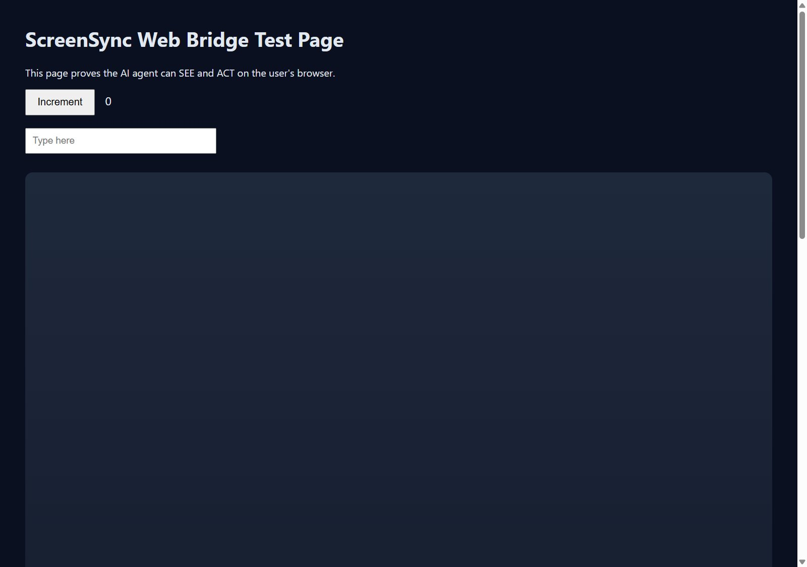

One extension gives AI agents safe, live access to your web — see your active tab, read any page, click & type for you — plus the full phone dashboard: live Android screen, latency telemetry and a one-click Connect Kit.

Just like the mobile app hands agents your phone, the extension hands them your browser — through the same token-secured hub on your LAN.
web_screenshot shows the agent exactly what you see in your active tab, as a real image.
web_hierarchy returns the page text plus a map of every clickable element, with indexes.
web_click, web_type, web_scroll and web_navigate operate your real tab — no headless fake.
Web access is OFF by default. Browser-internal pages are refused. A heartbeat shows presence; flip the toggle and the agent is cut off instantly.
The same dashboard streams your Android screen, latency telemetry and AI activity — click the frame to tap the phone.
Copy the exact MCP config for Claude Code / Desktop with your hub URL + token baked in, ready to paste.
Thirteen new tools take the agent from clicking to full debugging: web_eval runs JavaScript, web_console, web_network and web_dialog capture logs, requests and popups, web_storage reads localStorage & cookies, web_perf reports Core Web Vitals, web_tabs / web_tab manage multiple tabs, and web_wait_for, web_key, web_hover, web_select handle waits and precise input.
And the headline: web_watch streams changed frames every ~500 ms with pixel-level change detection — the agent literally watches your screen like a live video and never misses a visual change.
Every step below is shown with the real extension, exactly as you will see it.
The hub is the small local server everything connects to. Download it below, unzip, double-click start-hub.bat — no repo, no terminal. It prints a pairing link + QR. (Needs free Node 18+.)
Always the latest build — rebuilt from the GitHub repo on every release. Developer? git clone + npm install && npm run build && npm start still works.
Grab the zip below — no repo or terminal needed. Unzip it, open chrome://extensions (or edge://extensions), switch on Developer mode, click Load unpacked and pick the unzipped extension/ folder.
Always the latest build — the zip is rebuilt straight from our GitHub on every release, so you never install an outdated version.
A Chrome Web Store listing is in review — the sideload build is the identical code.


extension/ folder → Select Folder
Click the ScreenSync icon in your toolbar. A three-step welcome wizard opens — press Get started and it walks you to the connect form.

On the same computer the wizard finds localhost:3000 by itself. From another machine, paste the pairing link the hub printed (or scan its QR with the phone app). If the browser asks, allow the one-time LAN permission — that's the only prompt you'll ever see.


The dashboard opens: phone screen streaming, latency pills, AI activity. Then flip the Web access for AI agents toggle (OFF by default, for privacy). The pill turns green — your agent can now see, read and act on your active tab. Flip it off any time to cut access instantly.

The moment Web access is on, web_screenshot returns your active tab exactly as it is — this capture was taken by the agent itself during testing, not staged.
Restricted pages (chrome://, edge://, about:, devtools) are always refused.

The extension ships eight ready-made MCP skills. Any connected agent discovers them automatically via get_skills — no prompting gymnastics.
The agent checks the bridge, screenshots your live tab, reads the page, and explains it in plain words — with the image in its reply.
Maps every field from the hierarchy (no selector guessing), types your values, submits, and verifies the result with a screenshot.
Navigates to a URL, scrolls the whole page viewport by viewport, and reports layout / broken-UI / accessibility defects with evidence.
Follows your repro steps on the actual tab, screenshots before/after each step, and names the exact step where reality diverged.
Reproduces the problem while capturing console errors, failed network requests and dialogs live, then reports the likely cause with a final screenshot attached.
Records your live screen with web_watch, acts during the recording, then narrates every captured frame like a video — sub-second cadence, no visual change missed.
Loads the page, runs web_perf for FCP / LCP / CLS and resource stats, screenshots the result, and gives prioritized, plain-words speed recommendations.
Opens and switches between tabs, does its job on each one, and checkpoints progress with screenshots so you see exactly what happened where.
Hand your AI the whole picture — live Android screen and live browser — with safety switches you control.